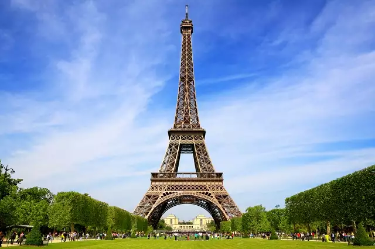
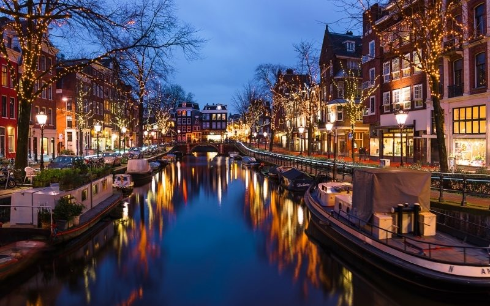

Torre eifel
A Torre Eiffel é um dos pontos turísticos mais icônicos da Europa. Localizada em Paris, na França, a torre é a estrutura mais alta da cidade e oferece uma vista incrível da capital francesa. Além de subir ao topo da torre, os turistas podem desfrutar de piqueniques nos jardins próximos e visitar o museu dentro da torre.
Cidade de Veneza

A cidade de Veneza, na Itália, é conhecida por seus canais, pontes e arquitetura impressionante. Os turistas podem passear de gôndola pelos canais, explorar as praças históricas da cidade e visitar a Basílica de São Marcos. Com sua rica história e beleza natural, Veneza é um destino turístico imperdível na Europa.
cidade de Barcelona
A cidade de Barcelona, na Espanha, é famosa por sua arquitetura única, gastronomia e vida noturna vibrante. Os turistas podem visitar a famosa Sagrada Família, projetada pelo arquiteto Antoni Gaudí, e explorar o bairro Gótico, com suas ruas estreitas e edifícios históricos. A cidade também é conhecida por sua paella e tapas, que podem ser encontrados em restaurantes locais.
Cidade de Amsterdâ
Amsterdã, na Holanda, é uma cidade encantadora, com canais sinuosos, arquitetura histórica e ciclovias bem estruturadas. Os turistas podem visitar o Museu Van Gogh, a Casa de Anne Frank e o Mercado de Flores de Amsterdã. A cidade também é famosa por sua vida noturna animada, com bares e clubes que atendem a todos os gostos.